| Local government area | Council seat | Region | Date established | Land area (km2) | Population (2018) | Pop. density | Councillors (2012) |
Map |
|---|---|---|---|---|---|---|---|---|
| City of Melbourne | Melbourne | Inner Melbourne | 12 August 1842 | 37 | 169,961 | 11,897 | 11 | 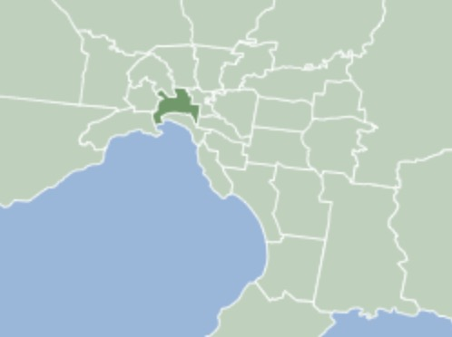 |
| City of Melton | Melton | Outer Metropolitan | 16 September 1862 | 528 | 156,713 | 769 | 7 | 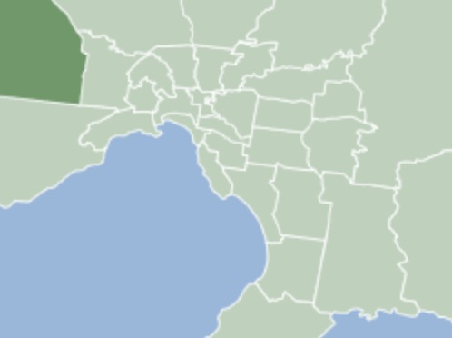 |
| City of Whittlesea | South Morang | Outer Metropolitan | 12 December 1862 | 490 | 223,322 | 1,180 | 11 | 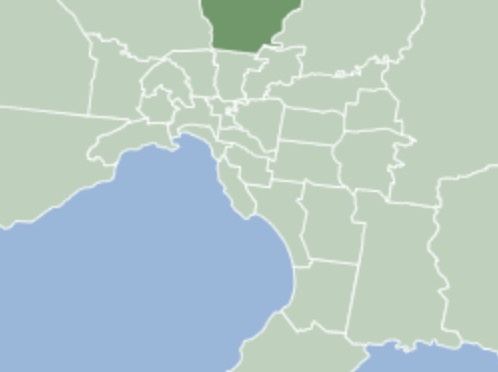 | City of Wyndham | Werribee | Outer Metropolitan | 6 October 1862 | 542 | 255,322 | 1,220 | 11 | 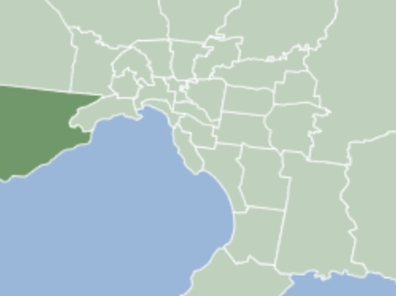 |
| City of Hume | Broadmeadows | Outer Metropolitan | 15 December 1994 | 504 | 224,394 | 1,153 | 11 | 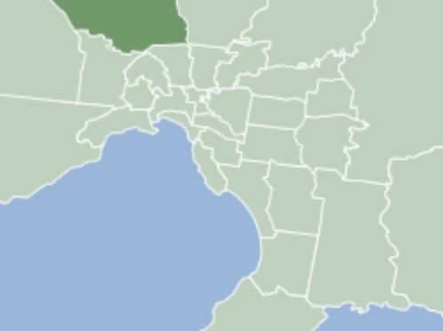 |
| Shire of Nillumbik | Greensborough | Outer Metropolitan | 15 December 1994 | 432 | 64,941 | 389 | 7 | 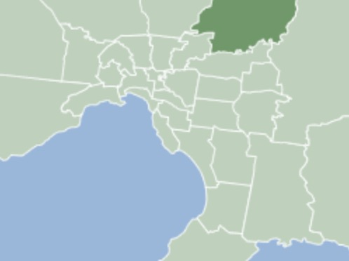 |
| Shire of Cardinia | Officer | Outer Metropolitan | 15 December 1994 | 1283 | 107,120 | 216 | 9 | 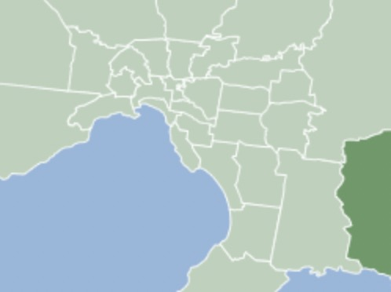 |
| City of Knox | Wantirna South | Outer Metropolitan | 16 October 1963 | 114 | 163,203 | 3,552 | 9 | 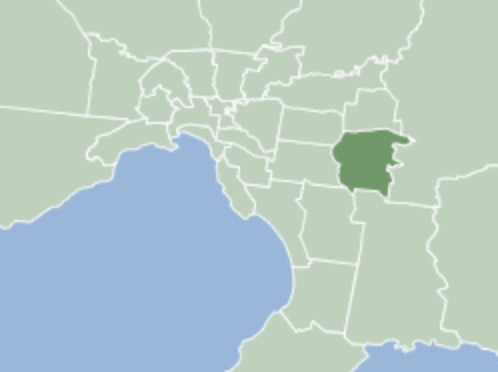 |
| City of Frankston | Frankston | Outer Metropolitan | 15 December 1994 | 130 | 141,845 | 2,826 | 9 | 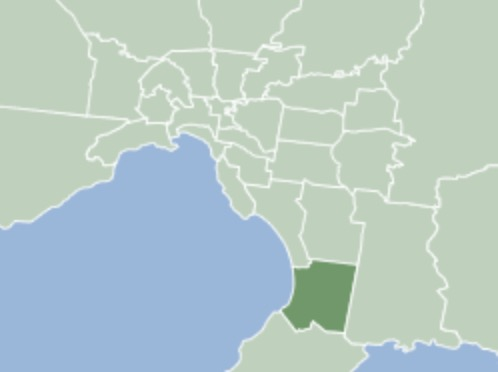 |
| City of Greater Dandenong | Dandenong | Outer Metropolitan | 15 December 1994 | 130 | 166,094 | 3,309 | 11 | 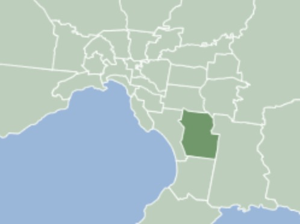 |
| City of Kingston | Cheltenham | Metropolitan Melbourne | 15 December 1994 | 91 | 163,431 | 4,651 | 9 | 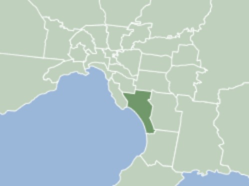 |
| City of Manningham | Doncaster | Metropolitan Melbourne | 15 December 1994 | 113 | 125,508 | 2,877 | 9 | 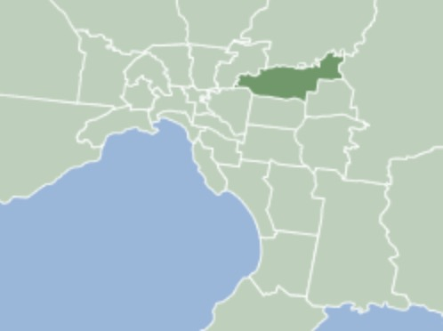 |
| City of Maribyrnong | Footscray | Metropolitan Melbourne | 15 December 1994 | 31 | 91,387 | 7,635 | 7 | 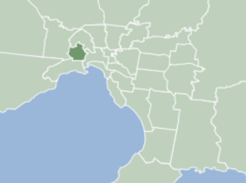 |
| City of Monash | Glen Waverley | Metropolitan Melbourne | 15 December 1994 | 82 | 200,077 | 6,319 | 11 | 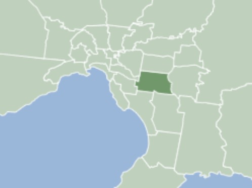 |
| City of Moonee Valley | Moonee Ponds | Metropolitan Melbourne | 15 December 1994 | 43 | 127,883 | 7,703 | 9 | 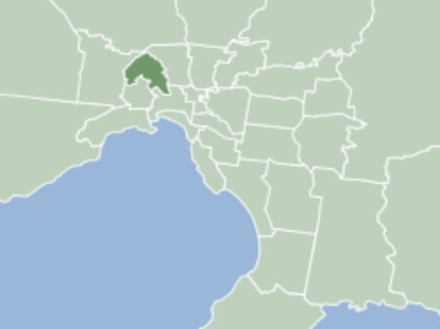 |
| Shire of Mornington Peninsula | Rosebud | Outer Metropolitan | 15 December 1994 | 724 | 165,822 | 593 | 11 | 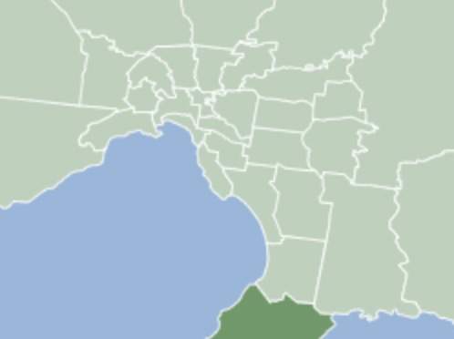 |
| City of Port Phillip | St Kilda | Inner Melbourne | 22 June 1994 | 21 | 113,200 | 13,961 | 7 | 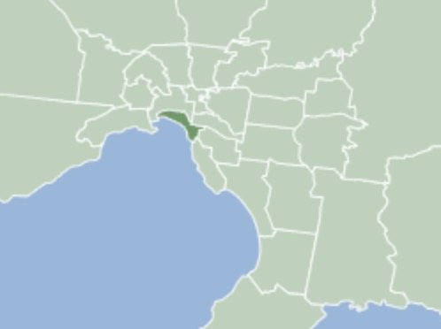 |
| Shire of Yarra Ranges | Lilydale | Outer Metropolitan | 15 December 1994 | 2468 | 158,173 | 166 | 9 | 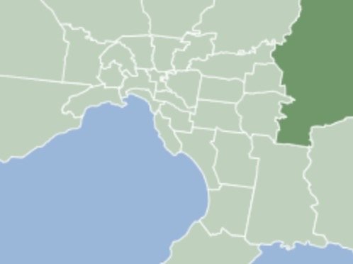 |